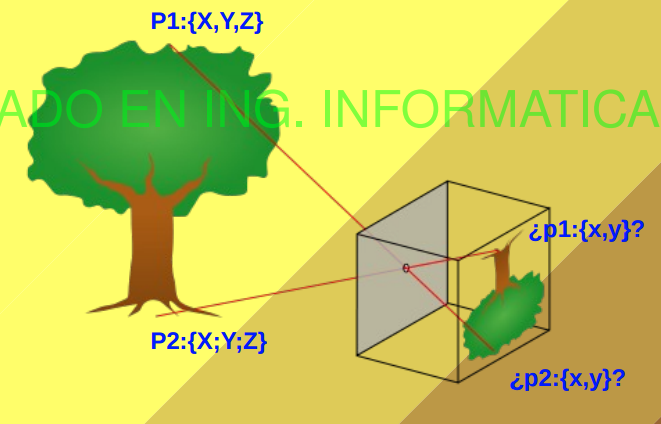
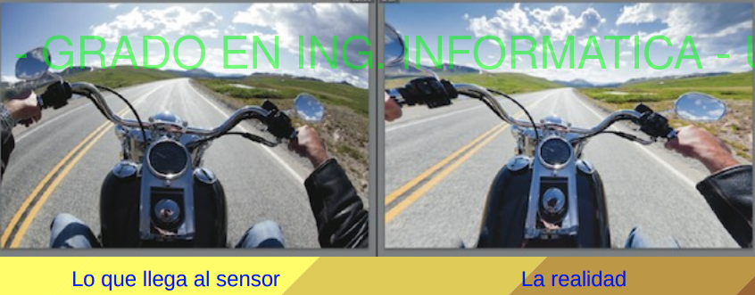
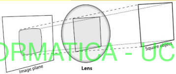
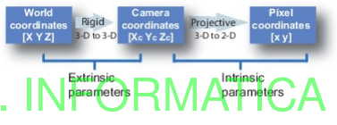
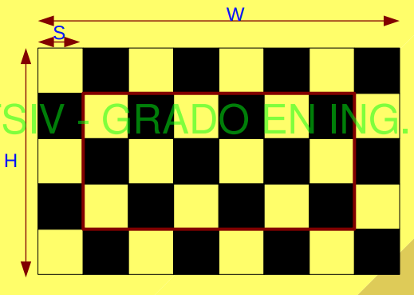

5. Modelo Proyectivo
En está sección se nos plantea el siguiente problema que también vimos en el bloque anterior y nos da los fundamentos para después entender como se reconstruye la escena 3D.
Modelo Pin-Hole
¿Como recupero un punto 3D de una imagen?
Como bien ya sabes al hacer una fotografía la componente de la profundidad se pierde, sin embargo, esta es muy importante.

Te recomiendo que para repasar esta parte mires esta explicación en 2. La Imagen Digital.
La novedad es que WOW, podemos representar esto como una matriz.
El vector resultante estará en coordenadas homogéneas, para obtener el vector no homogéneo se divide por la tercer componente.
Sin embargo, esto solo funciona en una situación ideal y presenta los siguientes problemas:
-
Distorsión de perspectiva: Aunque la proyección en perspectiva es deseable para algunas aplicaciones, no representa la realidad con suficiente precisión cuando se usan lentes reales.
-
No considera distorsiones que se producen en cámaras reales, especialmente en cámaras con lentes (como la distorsión radial o tangencial).
-
Calibración: El modelo pinhole es demasiado ideal para aplicaciones que requieren geometría precisa, como en visión artificial o reconstrucción 3D.

Modelo Pin-Hole Mejorado y parámetros Intrínsecos
Para mejorar la precisión del modelo pinhole, se introduce el modelo pinhole mejorado, que incluye parámetros adicionales para reflejar mejor las características y distorsiones reales de una cámara. Estos parámetros son esenciales para corregir el modelo básico en aplicaciones que requieren alta precisión, como la visión artificial o la reconstrucción 3D.
Mejoras del modelo Pin-Hole:
-
Distorsión Radial: Debido a la curvatura de las lentes, los puntos en el borde de la imagen se ven distorsionados, especialmente aquellos alejados del centro óptico. Esta distorsión se modela mediante parámetros
donde

-
Distorsión Tangencial: Esta distorsión ocurre debido al desalineamiento de los elementos en la lente. Se modela con los parámetros

-
Parámetros Intrínsecos de la Cámara: Además de las distorsiones, el modelo mejorado incluye parámetros intrínsecos que especifican el centro óptico
La matriz de calibración de la cámara es:
donde:
Ecuación Final del Modelo Mejorado
La proyección de un punto
donde se aplican las correcciones de distorsión radial y tangencial para obtener las coordenadas corregidas
Este modelo avanzado compensa los efectos no ideales de las lentes y la cámara, proporcionando una representación de la proyección más precisa y ajustada a la geometría de la cámara real.
Parámetros Extrínsecos
Los parámetros extrínsecos de una cámara definen su posición y orientación en relación al sistema de referencia global. Es decir, describen cómo se encuentra ubicada y orientada la cámara en el espacio 3D en relación a un marco de referencia, permitiéndonos transformar las coordenadas de un punto en el mundo a las coordenadas de la cámara.
¿Por Qué Son Importantes los Parámetros Extrínsecos?
Cuando se proyecta un punto desde el espacio 3D hacia una imagen 2D, necesitamos saber desde dónde y en qué dirección está "mirando" la cámara. Los parámetros extrínsecos nos permiten alinear el sistema de coordenadas de la cámara con el sistema de referencia del mundo, esencial en aplicaciones como:
- Reconstrucción 3D: para mapear correctamente puntos en el mundo real.
- Seguimiento de objetos: para conocer el movimiento de un objeto relativo a la cámara.
- Realidad aumentada: para alinear objetos virtuales con el entorno real desde la perspectiva de la cámara.
Desglose de los Parámetros Extrínsecos
-
Matriz de Rotación (
- Una matriz de tamaño
- Aplica una rotación a los puntos del sistema de coordenadas del mundo para alinearlos con la orientación de la cámara.
La matriz de rotación tiene la forma:
- Una matriz de tamaño
-
Vector de Traslación (
- Un vector
- Traslada el sistema de coordenadas de la cámara de forma que el origen del sistema de referencia global quede en el lugar correcto relativo a la cámara.
El vector de traslación tiene la forma:
- Un vector
Transformación Completa: De Coordenadas del Mundo a Coordenadas de la Cámara
Para convertir un punto en el espacio del mundo
donde
Esto transforma un punto
Matriz de Transformación Extrínseca Completa
Combinando la rotación y la traslación en una sola matriz
donde:
Esta matriz
Calibración de la cámara
La calibración de la cámara es el proceso de determinar los parámetros intrínsecos y parámetros extrínsecos que relacionan un sistema de coordenadas del mundo con el sistema de la cámara y finalmente con el plano de la imagen. La calibración permite proyectar puntos en el espacio 3D a puntos en la imagen de manera precisa, lo cual es esencial en aplicaciones de visión artificial, reconstrucción 3D y mapeo.
El resultado que obtenemos de los parámetros intrísecos y extrínsecos es la matriz proyectiva:
Lo que hace que encontrar las coordenadas en la imagen se haga de la siguiente manera:
Para el siguiente tema es interesante tener en cuenta esto:
Donde:

Se suele utilizar un método que usa "Tableros de Ajedrez", mediante un algoritmo reconoce las esquinas de este tablero y se obtienen todos los parámetros instrínsecos (Matriz de intrinseca

Aqui un ejemplo de código de como se hace el algoritmo en python:
import cv2
import numpy as np
# Tamaño del tablero (número de esquinas interiores)
pattern_size = (9, 6) # 9x6 es común, ajústalo según tu tablero
# Tamaño de cada cuadrado en el tablero (por ejemplo, 25 mm)
square_size = 25
# Preparar puntos 3D en el espacio del mundo (0,0,0), (1,0,0), ..., (8,5,0)
objp = np.zeros((pattern_size[0]*pattern_size[1], 3), np.float32)
objp[:,:2] = np.mgrid[0:pattern_size[0], 0:pattern_size[1]].T.reshape(-1, 2)
objp *= square_size
# Listas para almacenar puntos 3D y 2D
objpoints = [] # Puntos 3D en el espacio del mundo
imgpoints = [] # Puntos 2D en el plano de la imagen
# Cargar imágenes de calibración
images = [f'image{i}.jpg' for i in range(1, 21)] # Suponiendo 20 imágenes
for fname in images:
img = cv2.imread(fname)
gray = cv2.cvtColor(img, cv2.COLOR_BGR2GRAY)
# Encontrar las esquinas del tablero de ajedrez
ret, corners = cv2.findChessboardCorners(gray, pattern_size, None)
if ret:
objpoints.append(objp)
# Refinar ubicaciones de las esquinas
corners2 = cv2.cornerSubPix(gray, corners, (11,11), (-1,-1),
criteria=(cv2.TERM_CRITERIA_EPS + cv2.TERM_CRITERIA_MAX_ITER, 30, 0.001))
imgpoints.append(corners2)
# Dibujar y mostrar las esquinas detectadas (opcional)
img = cv2.drawChessboardCorners(img, pattern_size, corners2, ret)
cv2.imshow('Corners', img)
cv2.waitKey(100)
cv2.destroyAllWindows()
# Calibración de la cámara
ret, mtx, dist, rvecs, tvecs = cv2.calibrateCamera(objpoints, imgpoints, gray.shape[::-1], None, None)
# Imprimir los parámetros obtenidos
print("Matriz intrínseca:\n", mtx)
print("Coeficientes de distorsión:\n", dist)
print("Vectores de rotación:\n", rvecs)
print("Vectores de traslación:\n", tvecs)